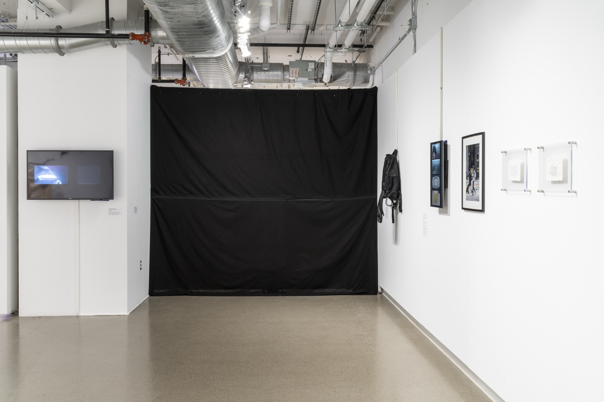

Thesis Exhibition

Everyday Once in a Lifetime
2023 · Video, 17:24 min
A collection of videos sent by the artist's mother of the inside of her purse are synced to fireball events from the American Meteor Society YouTube channel.
Backpack (from the zipper series)
2021 · Backpack, monitor, and zipper
The video is of a live feed from the El Paso, Texas – Ciudad Juárez, Mexico International Border Bridge.
Walking Poems: SAIC Gallery
2023
Instructions for a walk are performed and transformed during the process.
From left to right: Video Documentation (video, 11:39 min) · Photograph Documentation (color print) · Control (water soluble paper and laser printer ink) · Artifact (water soluble paper and laser printer ink)
Installation views
Photos: Eugene Tang